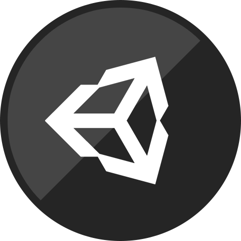

Tilt Ball ~ Unity Project ~
For this project we where given a simple scene with a ball that could be rolled around on a plane, we where asked to improve user interaction and user enjoyment of the game while keeping the heart of the initial project (aka don't go overboard and make a complelty different game). From this I decided to change the controls and everything else to mimic the game monkey ball. This was controlled by a devices gyroscope and would rotate the whole scene to move the ball rather then adding forces. This was my first project building to an android device.
The approaches used in the project included.
- Built to Android
- Use of the animation Controller
- Use of particle systems
- Use of audio sources
- Skybox's
- Use of camera overlapping (3 cameras used in total)
- Use of gyroscope input